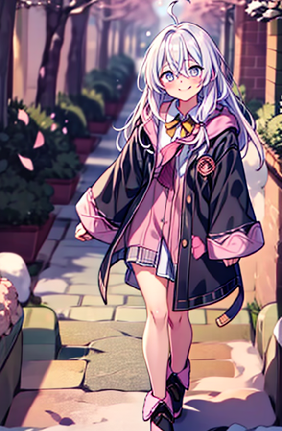

作業 06
這次的文生視頻作業讓我瞭解到了許多關於AnimateDiff的使用和Stable Diffusion的基本原理，從一開始跟著助教的工作流依葫蘆畫瓢順著執行，到後面修修改改加東加西，繞了許多彎路，做出了多個讓步最後才得出還可以看的結果。這次作業80%的時間用來調參數做煉丹測試，20%的時間在嘗試學習新東西像是Motion模型，ControlNet的Openpose和IPApdater的節點怎麽使用等等，最後嘗試了幾次報錯也沒全用上，但倒是成功嘗試到了加入自己找的走路motion、負向提示詞embeddings、Latent轉Pixel的vae和最後用RIFE VFI節點來補幀，也瞭解到了在ComfyUI中目前所用到的只是冰山一角，也都是用現成的工作流和模型來調參數煉丹，還有很多東西需要學習和探索。這次作業的過程讓我感受到了生成式人工智慧的強大和潛力，也讓我對未來的學習充滿了期待。
| 總分 | 完成後打勾 | 配分 | 分項描述 |
|---|---|---|---|
| 4 | Simple baseline - Comfy UI 環境設定完成 | ||
| 4 | Medium baseline - 生成角色的圖片 | ||
| 2 | Strong baseline - 生成完整角色動畫 | ||
| -10 | 沒有寫100字心得 |
CheckPoint:anything-xl.safetensors
LoRA:elaina.safetensors
LoRA:detail-tweaker.safetensors
Motion:animate-diff-motion-lora.safetensors
Embeddings:easy-negative.safetensors
Embeddings:negative-hand.safetensors
Embeddings:very-bad-image-negative.safetensors
VAE:clear-vae.safetensors
1.Simple baseline - Comfy UI 環境設定完成
LoRA:elaina.safetensors
LoRA:detail-tweaker.safetensors
Motion:animate-diff-motion-lora.safetensors
Embeddings:easy-negative.safetensors
Embeddings:negative-hand.safetensors
Embeddings:very-bad-image-negative.safetensors
VAE:clear-vae.safetensors

pre_text: "(masterpiece, best quality, highres),
batch_text:
"0": "spring day, cherry blossom trees, (fluttering sakura petals:1.2), elaina walking down a cherry blossom trees path, (butterflies:1.2), eyes open",
"20": "spring day, flower fields, (cherry blossom trees:1.2), (fluttering sakura petals:1.2), elaina walking down a cherry blossom trees path, (butterflies:1.2), (eyes closed)",
"40": "spring day, flower fields, cherry blossom trees, (fluttering sakura petals:1.2), elaina walking down a cherry blossom trees path, (butterflies:1.2), eyes open",
"60": "summer day, tropical beach, palm trees, bright sunlight, elaina walking along a scenic seaside path, blue sky, white cloud, (eyes closed)",
"80": "summer day, tropical beach, (palm trees:1.2), bright sunlight, elaina walking along a scenic seaside path, blue sky, white cloud, (bird flying in sky:1.1), eyes open",
"100": "summer day, tropical beach, palm trees, bright sunlight, elaina walking along a scenic seaside path, blue sky, white cloud, (eyes closed), (open mouth)",
"120": "autumn dusk, maple trees, (falling maple leaves:1.2), golden hour sunlight, elaina walking down a maple trees path, warm sunset tones, eyes open",
"140": "autumn dusk, (maple trees:1.2), (falling maple leaves:1.2), golden hour sunlight, elaina walking down a maple trees path, warm sunset tones, (eyes closed)",
"160": "autumn dusk, maple trees, (falling maple leaves:1.2), golden hour sunlight, elaina walking down a maple trees path, warm sunset tones, eyes open",
"180": "winter, snowy night, pine trees, (snowfall:1.3), (snowflakes drifting:1.1), starry sky, elaina walking down a quiet snowy path, (eyes closed), (open mouth)",
"200": "winter, snowy night, (pine trees:1.2), (snowfall:1.3), (snowflakes drifting:1.1), starry sky, elaina walking down a quiet snowy path, (eyes wink:1.2)",
"220": "winter, snowy night, pine trees, (snowfall:1.3), (snowflakes drifting:1.1), starry sky, elaina walking down a quiet snowy path, (happy expression:1.2)"
app_text: ", (walking toward viewer:1.3), dynamic stride, (background sliding backward:1.2), depth of field, scenery moving behind, ground scrolling back, environment shifting backward"
negative_prompt: embedding:easy-negative, embedding:negative-hand, embedding:very-bad-image-negative, (buildings:1.5), (urban:1.5), people, cars, roads, cityscape, fences, street signs, vehicles, pavement, concrete structures, rooftops

pre_text: "(masterpiece, best quality, highres),
batch_text:
"0": "spring day, cherry blossom trees, (fluttering sakura petals:1.2), elaina walking down a cherry blossom trees path, (butterflies:1.2), eyes open",
"20": "spring day, flower fields, (cherry blossom trees:1.2), (fluttering sakura petals:1.2), elaina walking down a cherry blossom trees path, (butterflies:1.2), (eyes closed)",
"40": "spring day, flower fields, cherry blossom trees, (fluttering sakura petals:1.2), elaina walking down a cherry blossom trees path, (butterflies:1.2), eyes open",
"60": "summer day, tropical beach, palm trees, bright sunlight, elaina walking along a scenic seaside path, blue sky, white cloud, (eyes closed)",
"80": "summer day, tropical beach, (palm trees:1.2), bright sunlight, elaina walking along a scenic seaside path, blue sky, white cloud, (bird flying in sky:1.1), eyes open",
"100": "summer day, tropical beach, palm trees, bright sunlight, elaina walking along a scenic seaside path, blue sky, white cloud, (eyes closed), (open mouth)",
"120": "autumn dusk, maple trees, (falling maple leaves:1.2), golden hour sunlight, elaina walking down a maple trees path, warm sunset tones, eyes open",
"140": "autumn dusk, (maple trees:1.2), (falling maple leaves:1.2), golden hour sunlight, elaina walking down a maple trees path, warm sunset tones, (eyes closed)",
"160": "autumn dusk, maple trees, (falling maple leaves:1.2), golden hour sunlight, elaina walking down a maple trees path, warm sunset tones, eyes open",
"180": "winter, snowy night, pine trees, (snowfall:1.3), (snowflakes drifting:1.1), starry sky, elaina walking down a quiet snowy path, (eyes closed), (open mouth)",
"200": "winter, snowy night, (pine trees:1.2), (snowfall:1.3), (snowflakes drifting:1.1), starry sky, elaina walking down a quiet snowy path, (eyes wink:1.2)",
"220": "winter, snowy night, pine trees, (snowfall:1.3), (snowflakes drifting:1.1), starry sky, elaina walking down a quiet snowy path, (happy expression:1.2)"
app_text: ", (walking toward viewer:1.3), dynamic stride, (background sliding backward:1.2), depth of field, scenery moving behind, ground scrolling back, environment shifting backward"
negative_prompt: embedding:easy-negative, embedding:negative-hand, embedding:very-bad-image-negative, (buildings:1.5), (urban:1.5), people, cars, roads, cityscape, fences, street signs, vehicles, pavement, concrete structures, rooftops